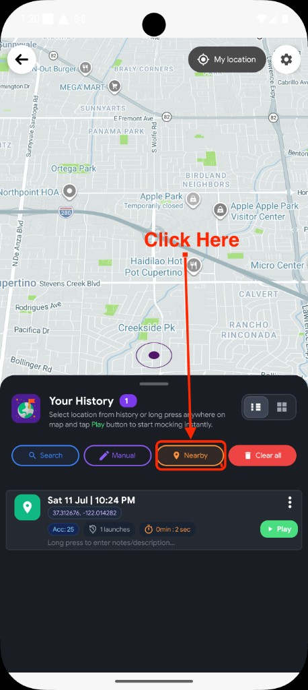
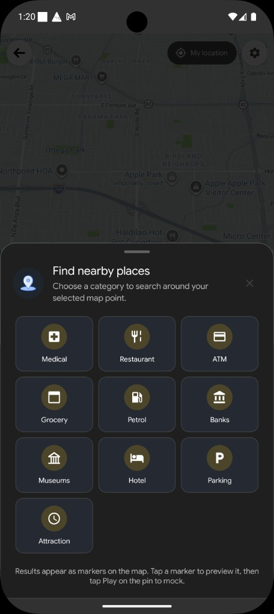
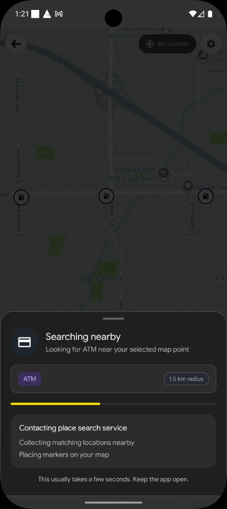
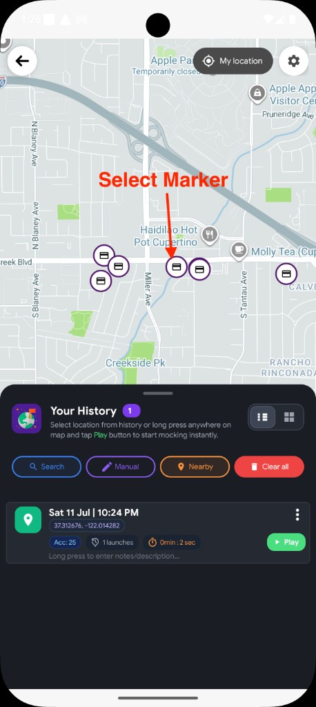
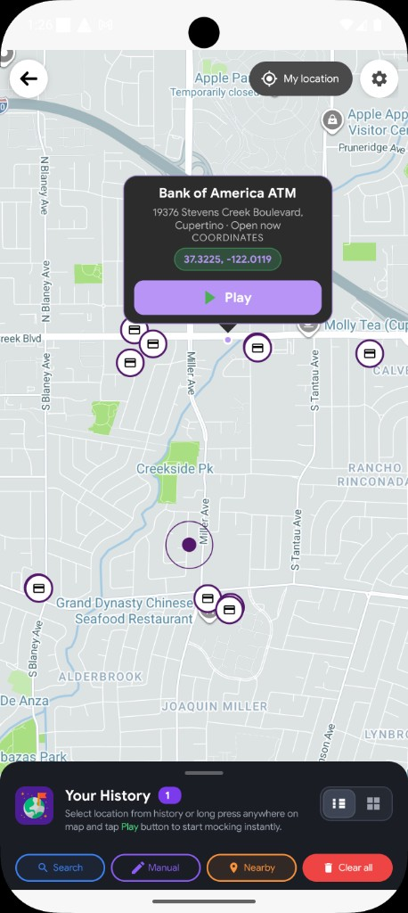

When Nearby is the right choice
Nearby is for exploring. You already have a point selected on the map (your current location, a history pin, or a spot you long-pressed), and you want to see real places of a certain type around that pin — without typing a name.
-
Category first
Choose Medical, Restaurant, ATM, Grocery, and other types from a simple grid.
-
Markers on the map
Results appear as pins around your selected point so you can compare at a glance.
-
Tap pin, then Play
Select a marker to preview it, then tap Play on the floating pin.
Important: Nearby searches around your selected map point, not necessarily where you are standing. Move or select a pin first if you want results in a different area. The search radius is fixed at about 1.5 km.
Before you begin
Checklist
- Mock Loc set up as your mock location app. Quick start →
- Internet connection — Nearby needs the network to find places.
- A map point selected — open Stationary Pointer so a pin is already on the map (default is often your current location).
How Nearby works — step by step
Make sure the map pin is where you want to search around — use My location, tap a history item, long-press the map, or leave the default pin. Then in the history tray action row, tap Nearby.

A sheet titled Find nearby places opens with the hint: Choose a category to search around your selected map point. Tap one category (for example Restaurant or ATM).

The category sheet closes and a loading sheet appears: Searching nearby, with your category, a fixed 1.5 km radius, and progress steps like contacting the place service and placing markers on the map.

When results arrive, Mock Loc places category markers around your center pin and zooms the camera so you can see them all. Tap a marker to preview it before you mock.

The floating pin callout shows the place name, whether it is open or closed (when available), coordinates, and a Play button. Tap Play to start mocking that place.

What you will see
- Loading sheet with 1.5 km radius — this radius is fixed for Nearby.
- All result markers use the same category icon you picked.
- Tapping another marker switches the selection; the previous marker comes back.
- After Play, nearby markers clear and the active mock player starts.
Categories you can pick
The category sheet shows these options in a grid. Tap any one to search within about 1.5 km of your selected map point.
Medical
Hospitals and medical facilities nearby
Restaurant
Places to eat around your pin
ATM
Cash machines in the area
Grocery
Stores and grocery-style places
Petrol
Fuel / gas stations
Banks
Bank branches nearby
Museums
Museums and cultural spots
Hotel
Lodging-style places in the area
Parking
Parking locations
Attraction
Amusement and attraction-style places
Quick tips
Get useful results
- Set the center first — Nearby uses your selected map pin, not free-text search.
- Expect a short wait — keep the app open while the loading sheet is visible.
- Compare markers — tap a few pins before you commit to Play.
- Need a name instead? Use Search when you already know the place title.
Troubleshooting
No markers appear
Check your internet connection and try another category. Dense areas usually return more results than remote map pins.
Results are in the wrong area
Nearby centers on the selected map point. Move the pin (long press, history, or Search) to the area you care about, then open Nearby again.
Play does nothing
Make sure you tapped a nearby result marker (not only the center dot), then pressed Play on the floating callout. Stop any conflicting mock session if the app asks you to.